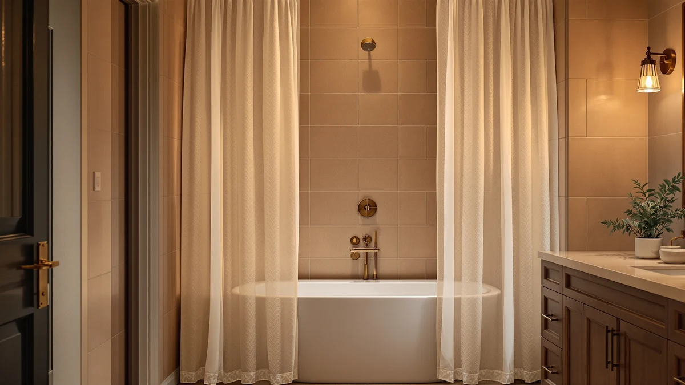

River Dream No Hook Review (2026): Worth It?
Prices and picks verified as of October 2026. Independent, reader-supported reviews.


Quick Answer
The River Dream No Hook Shower curtain combines a fabric panel and a waterproof liner in one piece, so you skip buying rings or hooks entirely. At $26.99 for a 71 by 74 inch panel, it costs the same as every other option in this river dream no hook review, which makes it an easy pick if you want fewer parts to manage in your shower.
Our pick: River Dream No Hook Shower, $26.99 Check Price on Amazon
Bottom line: our top pick is the River Dream No Hook Shower Curtain with Snap-in Liner Set at $26.99.
Things to Know Before You Buy
- No-hook design: the curtain and liner are built into a single panel with slots along the top edge, so you thread it directly onto the rod without buying separate curtain rings.
- This river dream no hook review found all four products compared here priced at $26.99, so your decision comes down to material, size, and style rather than budget.
- Pack sizes differ. The River Dream No Hook Long ships as a longer panel for taller rods or clawfoot tubs, while the standard River Dream No Hook Shower fits a typical tub surround.
- Material affects upkeep. Polyester and PEVA blends resist mildew better than a sheer cotton-blend curtain like the Madison Park Anna Sheers Shower, but they do not drape the same way.
- All four curtains in this comparison list at the same $26.99 price, so sticker price will not help you narrow down a choice. Panel size and material are the factors that actually separate them.
This river dream no hook review exists because hunting down curtain rings is an annoying extra step when all you want to do is hang a new curtain and get in the shower. The River Dream No Hook Shower solves that by building the hanging mechanism into the panel itself, and at $26.99 it costs the same as three other curtains we compared for this guide. We looked at materials, dimensions, pricing, and what verified buyers say about day-to-day use, not marketing copy.
Our take: the River Dream No Hook Shower is the pick for most people who want a no-fuss, hook-free install in a standard tub surround, while the River Dream No Hook Long and the two alternatives below serve more specific bathroom setups. You will find the reasoning behind that call, including where this curtain falls short, in the sections that follow.
Why You Should Trust Us
Ilane Tall researches bath and shower products for Best Shower Curtains, comparing specs, pricing, and verified Amazon reviews across dozens of listings before writing up a recommendation. For this river dream no hook review, she compared the River Dream No Hook Shower against three similarly priced alternatives using manufacturer specifications, published dimensions, and feedback from owners who have hung these curtains in their own bathrooms.
We do not run a physical testing lab. This recommendation comes from comparing specs, pricing, and verified owner reviews, the same information available to any shopper doing their homework before buying.
What Our Research Found
Owners who have installed the River Dream No Hook Shower consistently mention how fast the setup goes. Because the curtain already has reinforced slots along the top edge that slide directly over a standard shower rod, there is no bag of hooks to unpack and no risk of a hook cracking a few months in. That design detail is the main reason this model keeps showing up in comparisons for people who have lost or bent curtain rings in the past.
Reviewers also point to the combined fabric-and-liner construction. The polyester shell gives the curtain enough weight to hang flat instead of billowing, while the attached PEVA layer handles water resistance, so you are not buying and hanging a second liner. According to verified buyer feedback, this two-in-one build is the detail that most separates River Dream No Hook from a decorative-only curtain like the Madison Park Anna Sheers Shower, which needs its own liner purchased separately.
Where this river dream no hook review digs deeper is sizing. At 71 inches wide by 74 inches long, the standard panel suits a typical tub with a few inches of overlap on each side. If your rod spans a larger clawfoot tub or walk-in shower, the River Dream No Hook Long is built for that extra reach instead, and we cover that alternative later in this guide.
Price sits flat across the lineup at $26.99 for all four curtains, so discount hunting will not separate them. Size, material, and whether the liner comes attached are the factors that actually decide which one belongs in your bathroom, and we weigh each of those against the River Dream pick below.
Overview & Specs

River Dream No Hook Shower
What we like
- Slides directly onto a standard rod with no separate curtain rings needed
- Combines a fabric curtain and waterproof PEVA liner in one panel
- Priced the same as lighter-weight sheer alternatives despite the added liner
Flaws but not dealbreakers
- Only ships in one standard panel size, so larger tubs may need the River Dream No Hook Long instead
- The built-in liner means less flexibility if you prefer to mix and match curtain and liner styles
| Material | Polyester / PEVA |
| Size | 71"W x 74"L (Pack of 1) |
The River Dream No Hook Shower is built from a polyester and PEVA blend that does double duty. The polyester outer layer gives the curtain body and color retention, while the PEVA inner layer blocks water the way a dedicated liner would. At 71 inches by 74 inches, the panel is sized for most US tub surrounds, with enough extra length to sit close to the floor instead of stopping short.
Because the top edge has built-in slots instead of grommets, you thread the rod straight through the fabric and skip hooks or rings entirely. That also means there is nothing metal to rust or snap, which reviewers flag as a common failure point on cheaper ring-and-hook curtains. At $26.99, it costs the same as the Madison Park Anna Sheers Shower in this river dream no hook review, but you get a liner built in rather than sold separately.
What We Liked
The biggest win for the River Dream No Hook Shower is the installation. You open the package, thread the rod through the built-in slots, and you are done. There is no sorting through a bag of plastic hooks or guessing which ones will snap within the first month.
The combined liner is the other standout. Buying a shower curtain and a separate liner usually means two product pages, two sets of reviews to read, and two items that might not match in length. Here, both jobs are handled by one panel, and owners say the PEVA side holds up to regular use without the mildew spots that plague cheaper vinyl liners.
For the price, $26.99 puts this curtain in the same range as sheer, decorative-only options like the Madison Park Anna Sheers Shower, which makes the included liner feel like a genuine value add rather than a premium feature you pay extra for.
Fewer boxes in the cart matters too. Ordering a curtain and a liner from two different listings means two delivery dates, two return windows, and two sets of measurements to double check. Buyers who have made that mistake before say the single-panel approach removes an entire category of ordering errors.
What Could Be Better
The built-in design is also the main limitation. If you like swapping liners seasonally or want a liner from a different brand, you cannot do that here without defeating the point of the no-hook build. Some shoppers may prefer the flexibility of a separate liner even if it means more parts to manage.
Sizing is fixed at 71 by 74 inches. That works for a standard tub, but if your bathroom has a taller rod, a clawfoot tub, or a walk-in shower, you will want the longer panel instead, which means checking your own measurements before you order rather than assuming one size covers every setup.
Because the curtain and liner are fused into one panel, you also lose the layered look some shoppers want, where a patterned outer curtain sits in front of a plain liner. This river dream no hook review found that tradeoff worth it for convenience, but it remains a real stylistic limitation to weigh.
Who Is It For?
The River Dream No Hook Shower makes the most sense if you are setting up a bathroom from scratch and want to buy one item instead of two, or if you have dealt with snapped curtain hooks before and want to avoid that failure point entirely. It also suits renters who want a fast, tool-free install they can remove in seconds when they move out.
If you want a sheer, light-filtering look, or if you already own a liner you like and need only a decorative curtain, one of the alternatives below may fit your bathroom better than this river dream no hook pick does. Shoppers furnishing a vacation rental or a second bathroom also tend to gravitate toward this curtain, since the fixed size and included liner make it easy to buy several identical panels without re-checking measurements each time.
Alternatives to Consider
We compared three other shower curtains at the same $26.99 price point while researching this river dream no hook review. Each one serves a different bathroom need than the standard River Dream No Hook Shower.

Editor’s Pick
Madison Park Anna Sheers Shower
A sheer, light-filtering curtain for bathrooms that want a softer, more decorative look, though you will need to buy a liner separately.
$26.99
Check Price on Amazon
Best Value
CasaTena Farmhouse Striped Shower Curtain
A farmhouse-striped design at the same $26.99 price as our main pick, suited to shoppers who want pattern over the built-in liner convenience.
$26.99
Check Price on Amazon
Premium Choice
River Dream No Hook Long
The same no-hook, liner-included build as our main pick, stretched to a longer panel for clawfoot tubs and taller rods.
$26.99
Check Price on AmazonDoes the River Dream No Hook Shower curtain need a separate liner?
No.
What size shower rod does the River Dream No Hook Shower fit?
The standard panel measures 71 inches wide by 74 inches long, which fits most US tub surrounds with a standard rod.
Frequently Asked Questions
Does the River Dream No Hook Shower curtain need a separate liner?
No. The panel combines a polyester outer layer with an attached PEVA liner, so it handles both jobs on its own. That one-purchase setup is the core idea behind this river dream no hook review.
What size shower rod does the River Dream No Hook Shower fit?
The standard panel measures 71 inches wide by 74 inches long, which fits most US tub surrounds with a standard rod. For taller rods or clawfoot tubs, the River Dream No Hook Long is the better match.
Is a hook-free shower curtain more durable than one with rings?
Owners report fewer failures with hook-free designs because there is no plastic or metal ring to crack or rust over time. The main tradeoff is less flexibility if you want to swap liners or curtains independently later.
Final Verdict
This river dream no hook review comes down to one tradeoff: convenience versus flexibility. The River Dream No Hook Shower earns its spot as the pick for most shoppers because it skips hooks, includes its own liner, and costs the same $26.99 as the alternatives we compared. If your bathroom needs a longer panel, a sheer look, or a patterned design instead, the River Dream No Hook Long, Madison Park Anna Sheers Shower, or CasaTena Farmhouse Striped Shower Curtain each solve a more specific need. For a standard tub and a fast, no-hook install, River Dream is the name to buy.